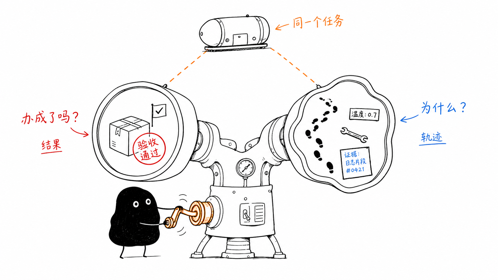
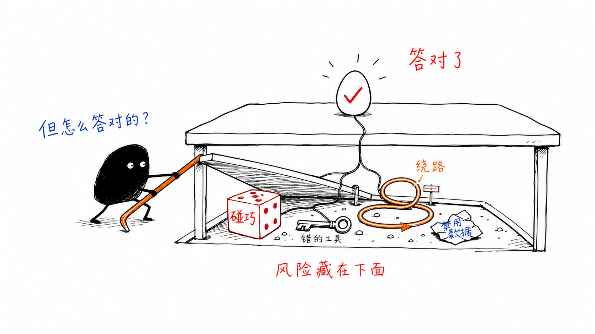
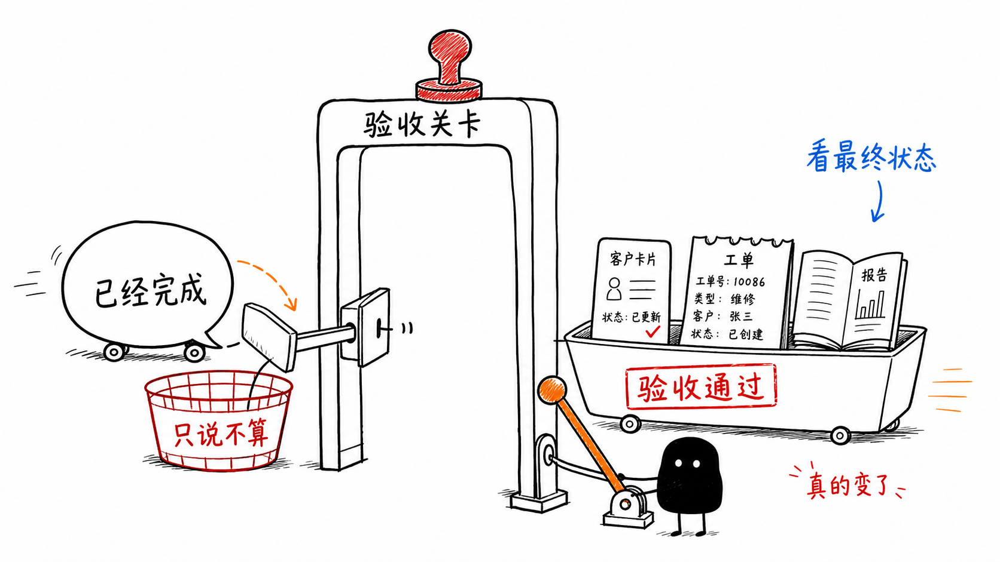
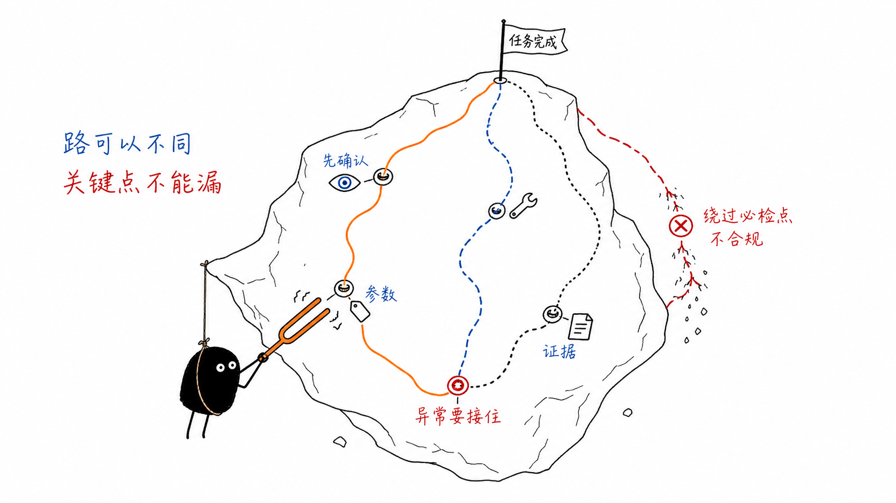
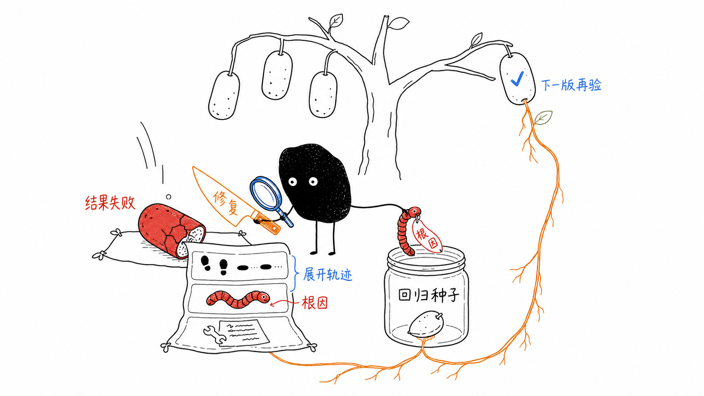

Agent 评测里的端到端评测和过程评测
一个 Agent 评测任务，至少要回答两个问题：任务最后有没有完成，以及它是怎么完成或失败的。
很多 Agent 评测讨论会把这两个问题混在一起。有人问最终回答好不好，有人看工具调用对不对，还有人关心轨迹是不是符合预期。这些都重要，但它们不是同一个层面的问题。
我更愿意先把它拆开：端到端评测看任务结果，过程评测看执行轨迹。前者回答“这个 Agent 能不能把事办成”，后者回答“它为什么办成、为什么失败、哪里需要修”。
简单说，端到端评测负责判断能不能交付给用户，过程评测负责告诉团队该修哪里。

为什么需要两种评测
传统大模型应用往往评估“这一轮回答是否正确”。但 Agent 的复杂性不只在最后一句话，而在它为了完成任务所经历的路径：识别意图、选择工具、检索知识、补齐参数、调用接口、处理异常，再把结果交付给用户。
只评最终回答会漏掉很多风险。一个 Agent 可能最后答对了，但中间调用了错误工具、绕了很多无效步骤、读取了不该读取的数据，或者只是碰巧在这条样本上成功。反过来，一个 Agent 最终失败了，也需要知道失败发生在意图理解、工具选择、参数填写、外部系统返回，还是最终表达。

但只看过程也不够。轨迹看起来合理，不代表业务任务真的完成；工具参数都对，也不代表最终状态符合用户预期。所以两种评测必须放在同一个评测任务里看。
端到端评测看任务结果
端到端评测是把 Agent 当成一个完整系统来评估。评测从用户任务开始，让 Agent 在真实或模拟环境里完整执行，然后根据最终回复、最终状态或业务验收条件判断任务是否成功。
一条端到端样本不应该只是一个问题，至少要写清楚：
- 用户输入和必要上下文是什么。
- Agent 可用的工具、数据、权限和初始状态是什么。
- 怎样算成功，怎样算失败。
- 最终回复或最终环境状态应该满足什么断言。
- 是否有安全、成本、时延或体验上的限制。
如果任务涉及状态变化，最终状态比最终回复更重要。比如客户信息有没有正确更新，工单有没有创建并包含必要字段，报告有没有生成且可以打开。这类任务不能只看 Agent 最后说“已经完成”。

过程评测看执行轨迹
过程评测评估的是 Agent 的执行轨迹。它可以包括模型调用、工具调用、检索结果、路由决策、参数、异常、重试、权限判断和中间回复。
它最适合回答“为什么”。失败是因为一开始理解错了，还是工具选错了；是参数没填全，还是工具返回后没有正确处理；是检索证据不相关，还是最终总结时编造了不存在的信息。
过程评测不要求每次路径都完全一样。对于开放任务，合理路径可能有多条。更重要的是定义关键过程约束：
- 哪些信息必须先确认，不能直接假设。
- 哪些工具或业务流程应该被调用，哪些不能调用。
- 工具参数是否完整、准确、合规。
- 检索到的证据是否相关，最终回答是否基于证据。
- 缺参、歧义、异常和越界时应该追问、拒绝还是转人工。

二者不是二选一
端到端评测和过程评测观察的是同一个 Agent 任务，只是视角不同。一个负责判断结果，一个负责解释路径。
| 维度 | 端到端评测 | 过程评测 |
|---|---|---|
| 核心问题 | 任务有没有完成 | 任务是怎样执行的 |
| 评估对象 | 完整任务、最终回复、最终状态 | 执行轨迹、工具调用、中间步骤 |
| 常见指标 | 任务成功率、关键任务通过率、最终状态正确率 | 工具调用准确率、参数正确率、路由准确率、检索相关性、异常恢复质量 |
| 主要用途 | 上线准入、版本回归、业务效果监控 | 问题诊断、根因分析、能力下钻 |
| 典型风险 | 只知道失败，不知道为什么失败 | 过程都对，但无法证明业务结果真的完成 |
在实践里，比较稳的用法是：先用端到端评测发现“有没有退化”，再用过程评测解释“为什么退化”。失败样本被修复后，再放回回归集中，下一次版本变更继续验证。
业务侧怎么组合使用这两种评测
对业务侧来说，最重要的不是把端到端评测和过程评测做成两张报表，而是让它们服务同一个判断：这个 Agent 能不能上线、有没有退化、问题能不能被定位和修复。
一个更实用的做法，是先把每条评测样本当成一个任务来写。任务里必须有用户输入、必要上下文、工具环境、初始状态和最终成功标准。简单任务只需要写清楚最终行为或最终状态；涉及路由、工具、安全、检索、异常恢复的关键任务，还要补充过程预期，比如应该调用什么工具、必须确认哪些信息、什么情况下应该追问或拒绝。
执行评测时，先看结果层。端到端评测给出每个任务的成功或失败，也可以汇总任务成功率、关键任务通过率、版本胜率、最终状态正确性、成本和时延。这一层用于上线准入、版本回归、版本对比和线上质量监控。业务方最该关心的是：关键任务有没有失败，新版本有没有比基线退步，高风险样本是不是仍然能过。
接下来不要对所有样本平均用力，而是把失败、退化、低置信和高风险通过的样本展开到过程层。过程评测要看完整执行轨迹：意图有没有识别对，路由有没有走偏，工具有没有选错，参数有没有填全，检索证据是否相关，中间状态有没有丢，异常和越界有没有被正确处理。这样才能把“结果不好”拆成业务方和研发能处理的问题。
最后的报告最好按同一条线组织：
结果指标 -> 失败样本 -> 执行轨迹证据 -> 根因标签 -> 修复建议。

根因标签不需要一开始就设计得很复杂，但要能指导动作。常见标签包括意图识别错误、路由错误、工具选择错误、参数错误、工具返回异常未处理、检索失败、基于错误证据回答、多轮状态丢失、缺参未追问、歧义未澄清、越界未拒绝、冗余步骤导致超时、最终表达错误、环境或依赖失败。
这样使用时，端到端评测是门禁和监控：它告诉业务能不能发布、有没有退化；过程评测是诊断和修复地图：它告诉团队问题发生在哪一步、该由谁处理、修完后用哪些样本回归。两者连起来，评测才不只是打分，而是能进入迭代。